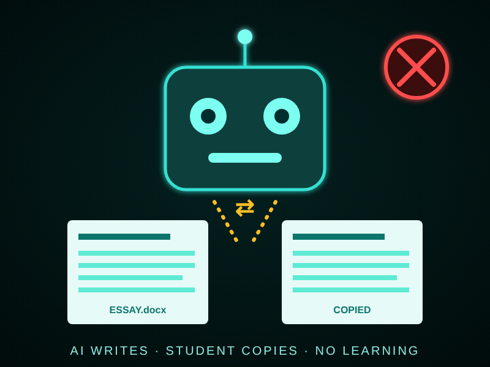

MIS & AI Ethics
Website Overview
Maryum Zaman
October 24, 2026
Home | AI Usage | Security | About Us
Correct AI Usage
My Paragraph:
Using AI correctly in college means treating it as a tutor and not as a substitute for my own thinking. I can ask it to explain a difficult concept, quiz me before an exam, or point out grammar mistakes in a draft that I wrote myself. I must always follow my professor's rules and clearly cite any AI that I use. Doing so keeps my work honest and helps me actually learn the material.
AI Response (Claude):
I agree with your reasoning. Positioning AI as a tutor keeps you in charge of the learning.
Critique: your paragraph could say how to check AI answers, because AI can sound confident and still be wrong.
Alternative view: some courses ban AI completely, so "follow the rules" must come first.
Suggestion: keep notes on your prompts so you can show exactly how you used the tool.
Benefits of AI
- Faster research and brainstorming
- Personalized tutoring and feedback
Who Benefits?
- Students who need extra help understanding a topic
- Businesses that analyze large amounts of data
How AI Tools Used
- Chatbots that explain difficult concepts
- Image generators that create visuals for projects
You can read my full written reflection in the Word document ai_ethics.docx. A PDF copy is also available in ai_ethics.pdf.
Incorrect AI Usage

- Submitting AI Work as Your Own
- A student pastes an assignment into AI and turns in the answer without writing or understanding it.
- Fake Citations and Sources
- A student trusts AI-made references without checking them, and some of the sources do not exist.
- Using AI During Exams
- A student secretly asks AI for answers during a quiz or test that does not allow outside help.
In my opinion, AI is a powerful tool that can help students learn faster. However, using it to cheat harms your own education more than anyone else's. Professors and employers will expect you to explain the work you hand in. Aggies do not lie, cheat, or steal, so we should be honest about every time we use AI.
|